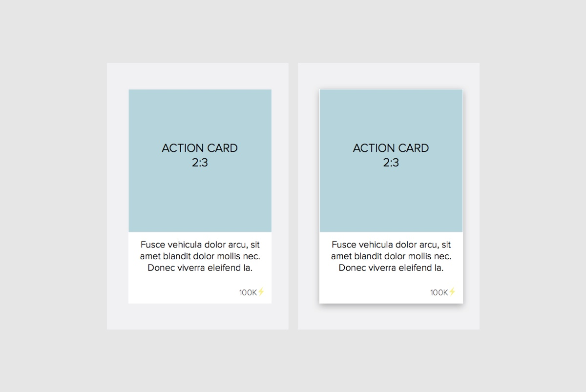
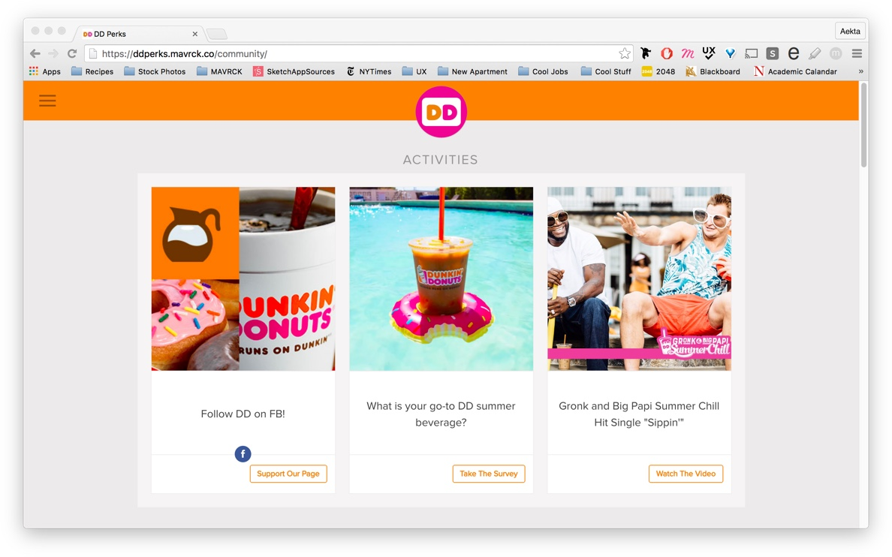
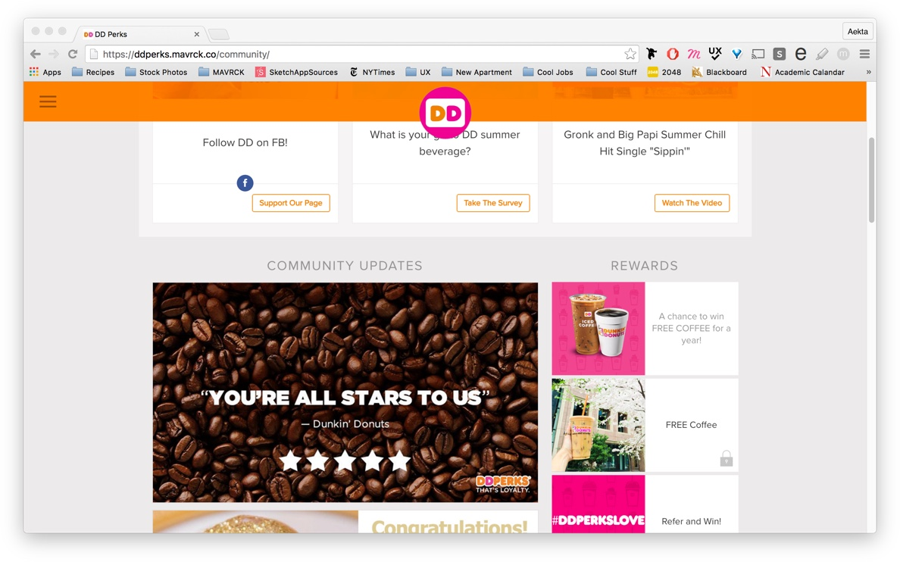
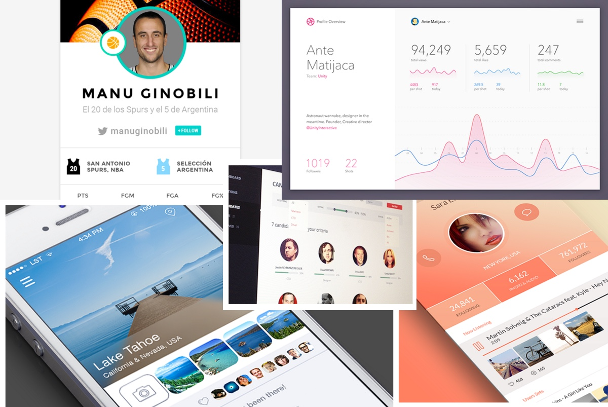
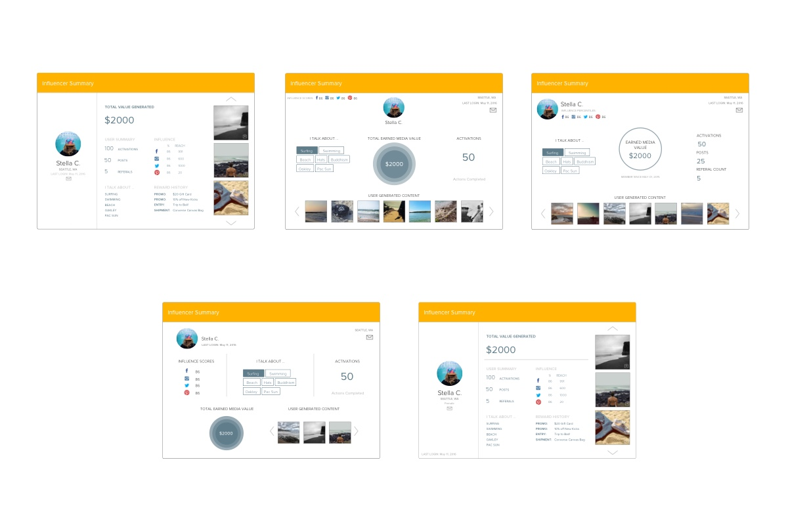
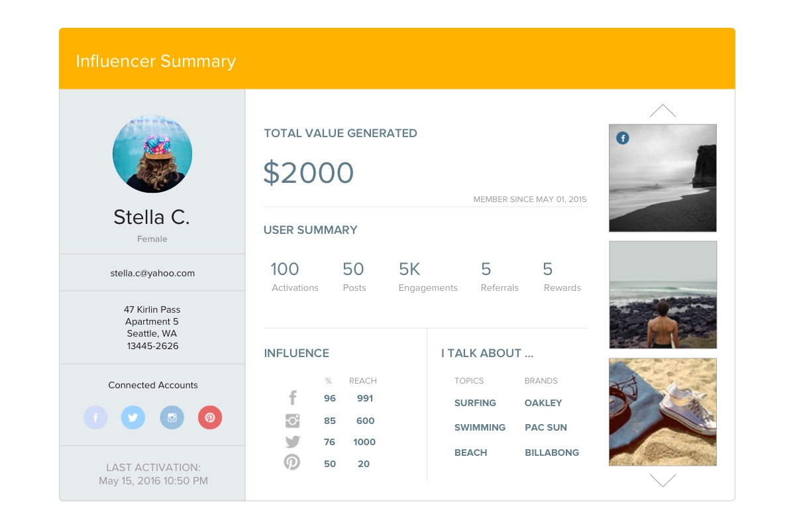
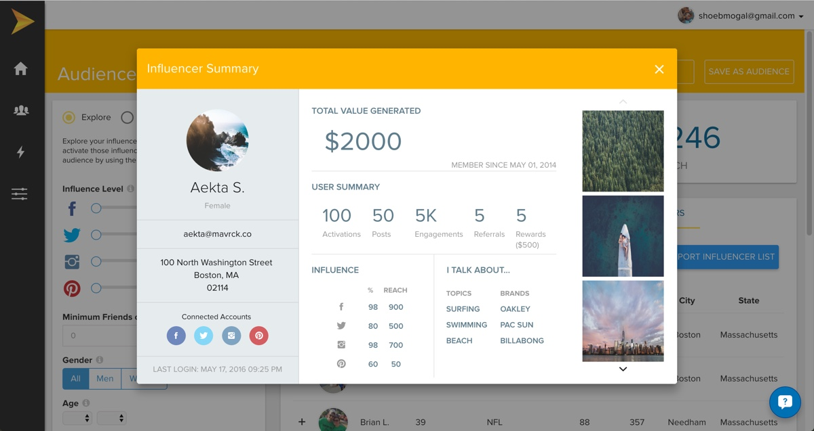

MAVRCK
UI/UX Design
Mavrck is an influencer marketing startup that strives to help brands harness the power of human-to-human marketing at scale by leveraging their existing customers with influence. Their products provide brands with authenitc means to engage with and activate their customers on social media.
I joined Mavrck for a 6-month co-op as a UI/UX Designer. My role involved working with the Product team on the roll-out of new features as well as collaborating with the Development team to ensure the quality of translation between design and production. My primary tools were Sketch and InVision. I occasionally supported the Development team with front-end work using HTML, CSS, and AngularJs.
Below I have included just two samples of my work. Please contact me here for more details about my work at Mavrck.
PROJECT 01: Community 2.0
Summary: The white-labeled Community product is one that brands can use as a platform to activate their existing loyal customers or fans with activites that involve engaging with the brand on social media.
Goal: Redesign the Community so that it could attract any kind of brand, no matter their style. They also wanted the Community to be more responsive for the 40% of users who would visit the site primarily on their phones.
My Approach: Design something mobile-first, simple, and modern that would highlight the brand's creative. I decided to incorporate the growing trend of "cards" that would allow activities to be easily identifiable and attract users to click into.
These are the digital wireframes presented to stakeholders for Phase 1 of this project:
(The colored blocks indicate where brands would import their content based on how they wanted to use the platform.)
Hover state for the cards:

Here are screenshots of the product when it went live with brand content:


Note: I continued to iterate on this product with the addition of new features.
PROJECT 02: Influencer Summary Modal
Summary: On the brand-facing side, there was a need for a new feature that would give brand managers the ability to see the performance of individual influencers in their community. This modal was meant to display the value of each influencer and summarize their performance in the Community product.
Goal: Design a modal that could be populated with information about each influencer in a brand's Community. In addition, this modal should highlight to the customers how much value that Mavrck is driving for them through their technology.
My Approach: Information hierarchy was my main focus here. I worked with different stakeholders to determine which elements should dominate the user’s attention and what they wanted to draw their eyes most. Once challenge I faced was figuring out how to incorporate a lot of information into a relatively small amount of space without being overwhelming to the user. I designed this modal to work with the existing product's design style. I also developed the front-end using flex-boxes.
I started off with an inspiration board:

Here are some of my initial iterations with different ways to organize the information:
I used Craft by InVision to import dummy content and creative.

Here is the final mockup in Sketch:

Here is a screenshot of the final modal in production:

(Dummy data was used for this screenshot.)